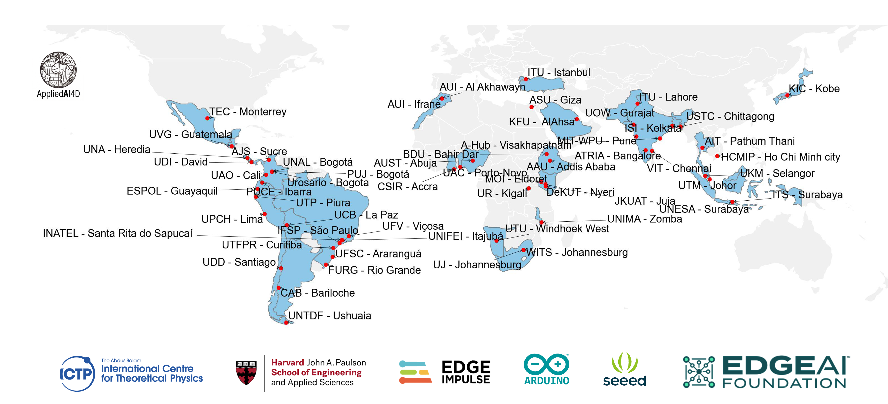

Community
GLOBAL NETWORK
AI engineering education
belongs to everyone.
Machine Learning Systems is taught at 50+ universities across five continents — from Bogotá to Johannesburg, from Kobe to Nairobi. Every chapter and lab is open and free — and we ship hardware kits to partner universities that need them.

The TinyML4D Academic Network: 50+ partner universities teaching ML systems, supported by ICTP, Harvard SEAS, Edge Impulse, Arduino, Seeed, and the Edge AI Foundation.
Global Readership
313,063 readers across 204 countries and territories — thank you for making this community what it is.
Schools where readers study
From readers' public GitHub affiliations and links that send students here from course sites. A school appears once three or more readers point to it. For courses that assign the book, see Courses Using the Book.
"This was the first time our students could run a neural network on real hardware they could hold in their hands. That changes how they think about ML — it's not abstract anymore."
TinyML4D partner university
"Before this curriculum, our students had no way to learn ML systems with real hardware. The kits and course materials changed what we could teach."
Professor, UNIFEI, Brazil
How We Reach Learners
Every chapter is free to read — but access means more than a URL. It means hardware, training, and showing up in person.
Hardware Where It's Needed
We ship real hardware — Arduino and Seeed edge devices — to partner universities that couldn't otherwise afford them. Students learn on real silicon, not just simulations.
Workshops on the Ground
The annual SciTinyML workshop series at ICTP in Trieste brings researchers and students together to apply ML to scientific challenges — from environmental monitoring to health diagnostics. Regional editions run across Latin America and Africa.
Instructor Support
Partner universities receive curriculum materials, lecture slides, and mentorship. The TinyML4D network connects educators across institutions so no one is teaching alone.
Free and Open — Always
The full two-volume textbook is available as free HTML, PDF, and EPUB. The edX Professional Certificate reaches hundreds of thousands of learners. Everything is CC-BY-NC-SA licensed.